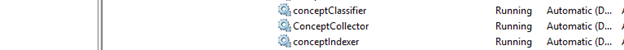
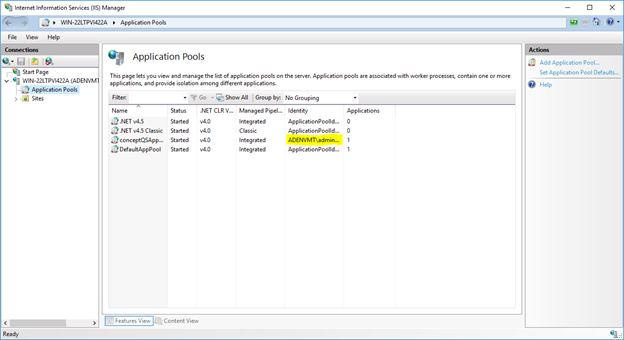

Overview
After resetting the service account password for NDC there are several locations within NDC and IIS that will need to be updated to reflect this change. This article will show you where the new password will need to be supplied.
Services

Update the “Logon As” value for each of the services listed above to reflect the password change.
ConceptConfig
Navigate to each of the locations below. These locations control the SQL database connection and the account use to make that connection. Update the account credentials for all three locations.
- "C:\Program Files\ConceptSearching\Services\ConceptCollectorService\conceptConfig.exe"
- "C:\inetpub\wwwroot\conceptQS\bin\conceptConfig.exe"
- "C:\Program Files\ConceptSearching\Services\conceptIndexer\conceptConfig.exe"
IIS
Open IIS and click Application Pools on the left hand pane. Right click on the conceptQSAppPool and click Advanced Settings.
Find the Identity and update the password to match the new password for the account, then restart the application pool.

Taxonomy Global Settings
Navigate to http://hostname/conceptQS/Taxonomies/GlobalSettings and confirm the status of each taxonomy. Find the faulting termsets and update the credentials for each.